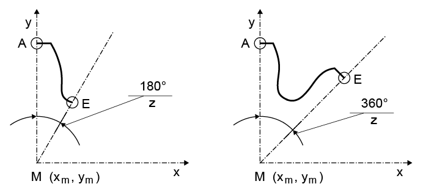

|
|
|


读取（导入）圆柱齿轮
可以直接以 文件导入圆柱齿轮。为此，需从预定义图层中定义一个半齿（非对称齿为整个齿）（选择 ALL 表示所有图层）。
齿形也可以从一组点 (x, y, N, R) 导入。用于导入的示例文件存储在 DAT 文件夹中（Example_ToothFormAsPoints.DAT）。

图 15.76：导入的坐标系
A：齿顶中部：轮廓起点
E：齿槽中部（非对称齿轮中为齿顶中部）：轮廓终点
M：中心点（xm、ym 为必填项）
z：齿数
单击选项，可在图纸中修改模数。随后刀具数据将按基本数据中指定的法向模数进行缩放。
但是，如果导入的齿形包含直线元素（例如多段线），则必须以近似方式计算局部法线和曲率，以便进行接触分析。在这种情况下，请单击复选框。
注意
该文件（）在您为导入指定的图层中只能包含轮廓 A 到 E。
注意
此工序不应与“自动”工序结合，除非有意为之。要禁用“自动”，右键点击“禁用”。
Reading (importing) a cylindrical gear
You can import a cylindrical gear directly as a file. To do this, define a half tooth (or a full tooth for an asymmetric tooth) from the predefined layer (select ALL for all layers).
The tooth form can also be imported from a group of points (x, y, N, R). A sample file for the import is stored in the DAT folder (Example_ToothFormAsPoints.DAT).
Figure 15.76: Coordinate system for the import
A: Mid tooth tip: Start of contour
E: Middle tooth space (middle of the tooth tip in asymmetric gears): End of contour
M: Center point (xm, ym is a required entry)
z: Number of teeth
Click on the option to modify the module in the drawing. The cutter data is then scaled to the normal module specified in the basic data.
However, if the imported tooth form has straight elements (e.g. it is a polyline), the local normals and curvatures must be calculated as approximations so that a contact analysis can be performed. In these cases, click on the checkbox.
Note
The file () must only contain contours A to E in the layer you can specify for importing.
Note
This operation should not be combined with the "automatic" operation, if this is not intended. To deactivate "automatic", right-click "Deactivate".